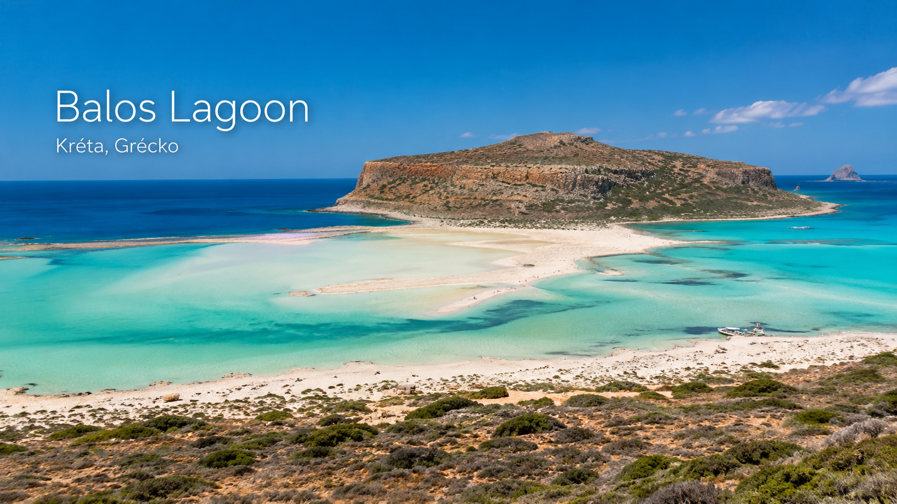
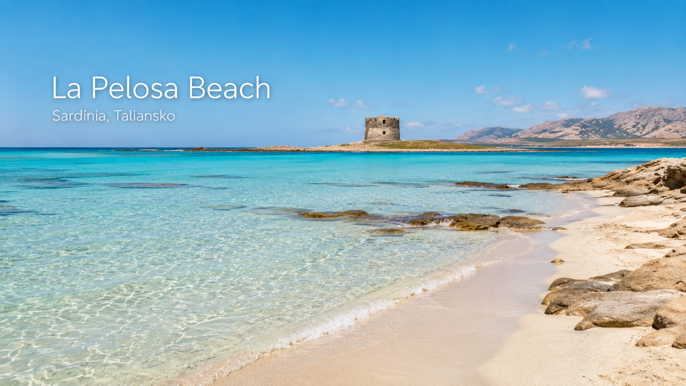
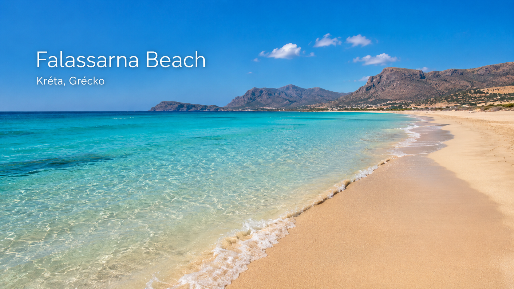
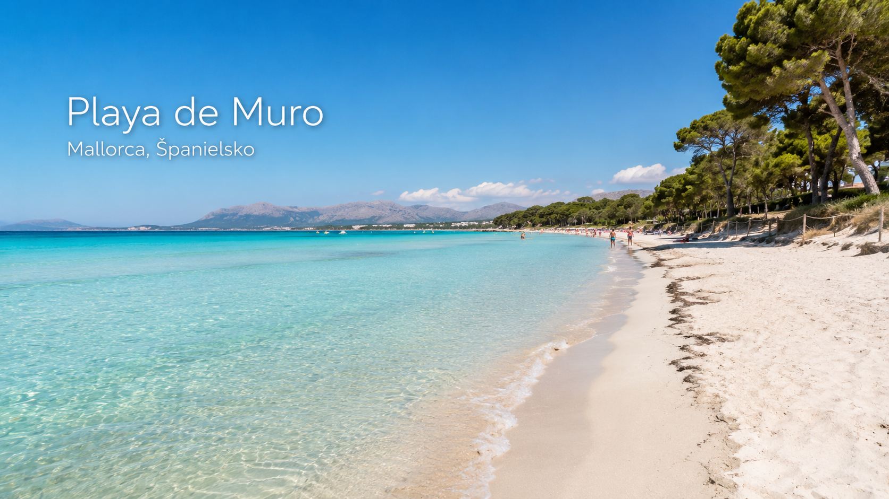

Stredomorie má stovky krásnych pláží. Niektoré sú divoké, iné rodinné, ďalšie ikonické hlavne kvôli fotkám zhora. Keď sa však pozrieme na cestovateľské hodnotenia, v európskom Stredomorí sa opakovane objavuje niekoľko mien, ktoré vyčnievajú nad ostatnými.
Tento článok je AI cestovateľský prieskum piatich najlepšie hodnotených pláží v Stredomorí v rámci EÚ. Nejde o osobný rebríček z návštevy všetkých miest, ale o výber podľa dostupných hodnotení, cestovateľských rebríčkov a praktických informácií pre dovolenkárov.
Do výberu sú zaradené iba pláže, ktoré ležia v Stredomorí a zároveň v krajinách EÚ. Preto tu nie je napríklad portugalská Praia da Falésia, hoci je v európskych rebríčkoch veľmi vysoko. Tá patrí k Atlantiku, nie k Stredozemnému moru.
1. Elafonissi Beach — Kréta, Grécko
Elafonissi patrí medzi najznámejšie pláže Kréty a často sa objavuje medzi najkrajšími plážami sveta. Jej najväčším lákadlom je jemný ružovkastý piesok, plytká tyrkysová voda a lagúnový charakter pobrežia.
Je to pláž, ktorá na fotkách vyzerá skoro až nereálne. Plytká voda je vhodná aj pre rodiny s deťmi, no zároveň tu treba počítať s tým, že práve popularita prináša veľké množstvo návštevníkov.
Pre koho je vhodná
Pre rodiny, páry, fotografov a každého, kto chce zažiť ikonickú grécku pláž.
Na čo si dať pozor
V hlavnej sezóne môže byť pláž veľmi plná. Keďže ide o prírodne citlivú lokalitu, treba rešpektovať pravidlá ochrany prírody a nebrať piesok ani mušle ako suvenír.
AI cestovateľský tip
Najlepšie je prísť skoro ráno alebo mimo hlavnej sezóny. Ak chceš pokojnejší zážitok, jún a september môžu byť príjemnejšie než vrchol leta.
2. Balos Lagoon — Kréta, Grécko
Balos Lagoon je jedna z najikonickejších lagún v celom Stredomorí. Z výšky pôsobí ako prírodná maľba: biely piesok, plytké tyrkysové more, pieskové pásy a divoká krajina okolo.
Na rozdiel od klasickej pláže pri hoteli je Balos trochu dobrodružnejší cieľ. Dá sa sem dostať loďou, prípadne autom po horšej ceste a potom pešo. Práve v tom je jeho čaro. Nie je to úplne bežná plážová zastávka, ale skôr výlet.

Pre koho je vhodná
Pre cestovateľov, ktorí chcú silný wow efekt, výhľady a fotogenické miesto.
Na čo si dať pozor
Prístup nie je najkomfortnejší. Treba rátať s chôdzou, slnkom, vodou so sebou a tým, že služby môžu byť obmedzené.
AI cestovateľský tip
Ak ideš s deťmi alebo staršími ľuďmi, zváž lodný výlet. Ak chceš najkrajší pohľad zhora, priprav sa na pešiu časť a dobrú obuv.
3. La Pelosa Beach — Sardínia, Taliansko
La Pelosa na severe Sardínie vyzerá miestami ako Karibik, len stále v Európe. More je tu plytké, priezračné a má nádhernú tyrkysovú farbu. Pláž je známa aj výhľadom na malú kamennú vežu, ktorá jej dodáva typickú atmosféru.
Toto je jedna z najlepších pláží pre tých, ktorí chcú krásne more, ale zároveň pohodlnejší prístup než pri divokých lagúnach. Veľkou témou je však regulácia návštevnosti.
V sezóne je vstup na La Pelosu regulovaný a vyžaduje sa rezervácia. Pravidlá uvádzané pre sezónu 2026 počítajú s denným limitom 1 500 miest a rezervačným obdobím od 15. mája do 15. októbra 2026. Pred cestou si vždy over aktuálne podmienky na oficiálnej stránke pláže.

Pre koho je vhodná
Pre rodiny, páry a dovolenkárov, ktorí chcú plytké more a pokojný vstup do vody.
Na čo si dať pozor
Bez rezervácie sa v sezóne nemusíš na pláž dostať. Treba si vopred pozrieť aktuálne pravidlá, poplatok, čas vstupu a podmienky používania plážovej podložky.
AI cestovateľský tip
La Pelosa je nádherná, ale plánuj ju dopredu. Nie je to typ pláže, kam v auguste len tak spontánne prídeš a všetko bude vyriešené.
4. Falassarna Beach — Kréta, Grécko
Falassarna je úplne iný typ krásy než Balos alebo Elafonissi. Je široká, priestranná a pôsobí voľnejšie. Má dlhý piesočný pás, čistú vodu a krásne západy slnka, pretože leží na západnej strane Kréty.
Je vhodná pre ľudí, ktorí nechcú byť natlačení v malej lagúne a hľadajú viac priestoru. Keď je dobré počasie, voda je nádherná a pláž pôsobí pokojne. Pri vetre však môže byť more rozbúrenejšie.

Pre koho je vhodná
Pre cestovateľov, ktorí chcú veľa priestoru, kúpanie a západ slnka.
Na čo si dať pozor
Vietor a vlny môžu zmeniť zážitok z pláže. Nie každý deň je ideálny na kúpanie s malými deťmi.
AI cestovateľský tip
Falassarna môže byť výborná ako poobedňajší cieľ s večerným západom slnka. Pred cestou si pozri predpoveď vetra.
5. Playa de Muro — Mallorca, Španielsko
Playa de Muro na Mallorce možno nepôsobí tak dramaticky ako Balos, ale prakticky je to jedna z najlepších dovolenkových pláží v Stredomorí. Má dlhý piesočný pás, plytkú vodu, dobrý prístup a služby v okolí.
Je to pláž, kde sa dá pohodlne stráviť celý deň. Voda je pokojná, vstup do mora pozvoľný a prostredie vhodné aj pre rodiny s deťmi. V okolí sú hotely, reštaurácie a dobrá dovolenková infraštruktúra.

Pre koho je vhodná
Pre rodiny, pohodových dovolenkárov a ľudí, ktorí chcú krásnu pláž bez zložitého prístupu.
Na čo si dať pozor
V sezóne býva rušnejšia. Ak hľadáš divokú, prázdnu pláž, Playa de Muro nemusí byť tvoja prvá voľba.
AI cestovateľský tip
Playa de Muro je skôr komfortná istota než dobrodružná výprava. Ak cestuješ s deťmi, môže byť praktickejšia než viacero slávnejších pláží.
Rýchle porovnanie
- Elafonissi Beach, Grécko — ružovkastý piesok a lagúna; pozor na veľa ľudí a ochranu prírody.
- Balos Lagoon, Grécko — najväčší wow efekt; pozor na horší prístup.
- La Pelosa Beach, Taliansko — plytká tyrkysová voda; pozor na rezerváciu v sezóne.
- Falassarna Beach, Grécko — veľa priestoru a západ slnka; pozor na vietor a vlny.
- Playa de Muro, Španielsko — komfort pre rodiny; pozor na rušnejšiu sezónu.
Verdikt Letom po Stredomorí
Najikonickejšou plážou výberu je Elafonissi. Ak je cieľom najkrajší výhľad a silný zážitok, vyčnieva Balos Lagoon. Pre rodiny a plytkú tyrkysovú vodu sú veľmi silnou voľbou La Pelosa alebo Playa de Muro. Ak chceš viac priestoru a západ slnka, pozri si Falassarnu.
Najdôležitejšia rada je jednoduchá: pri najznámejších plážach Stredomoria si pred cestou vždy over aktuálne pravidlá. Niektoré miesta už fungujú s limitmi, rezerváciami alebo prísnejšou ochranou prírody. Krásna pláž je super, ale ešte lepšie je prísť pripravený.
Zdroje a overenie
- Tripadvisor Travellers' Choice Best of the Best Beaches 2026
- Oficiálna stránka Spiaggia La Pelosa
- Informácie o ochrane vybraných gréckych pláží v roku 2026